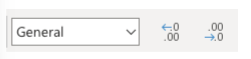
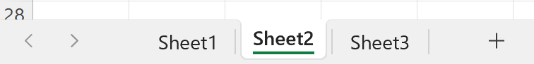
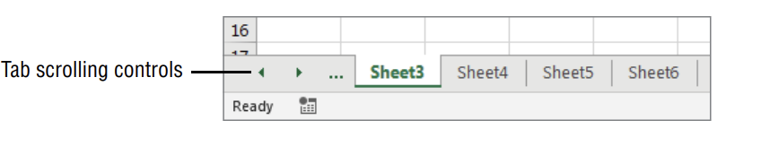
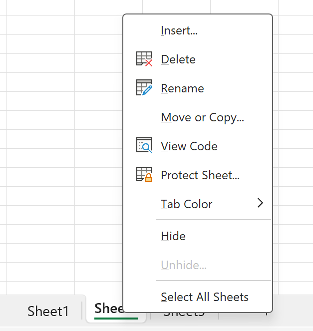
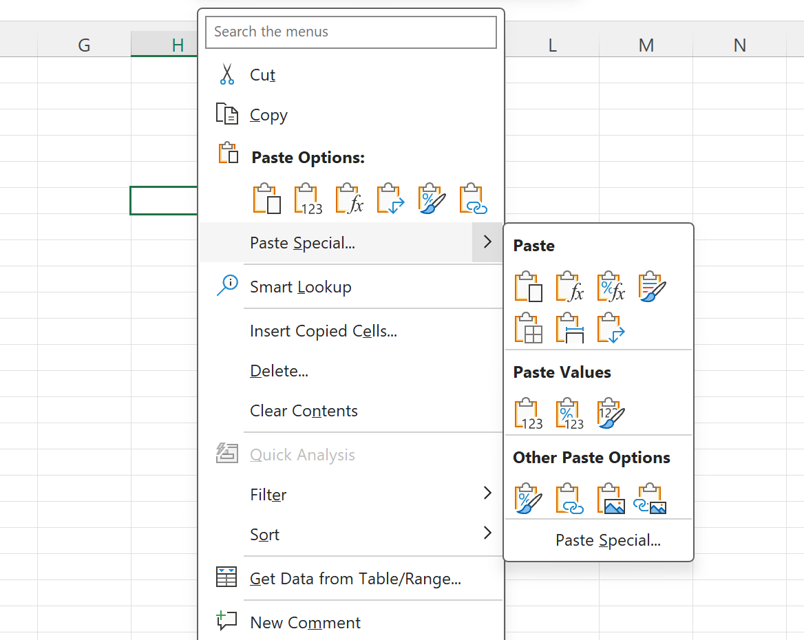
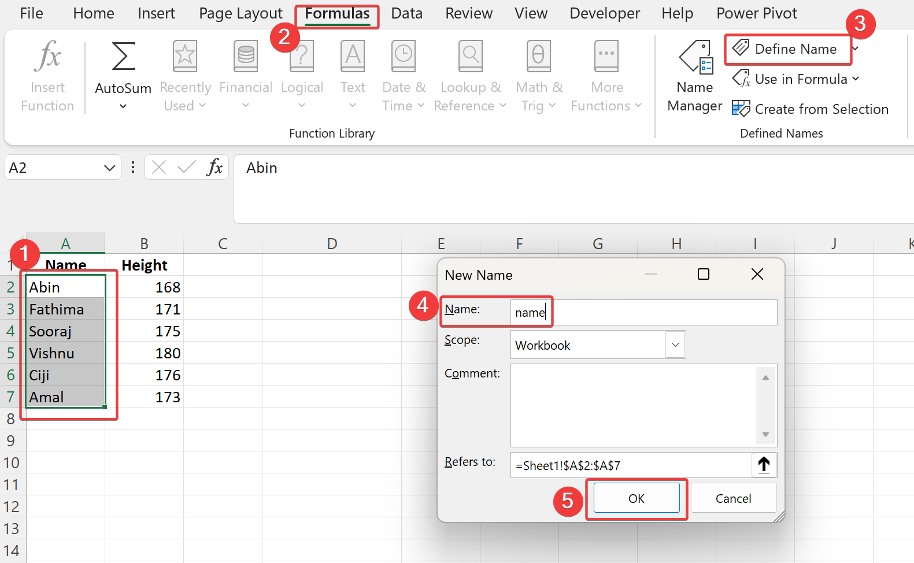
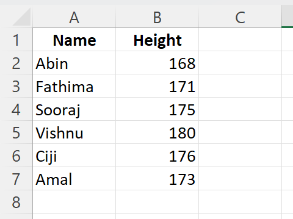
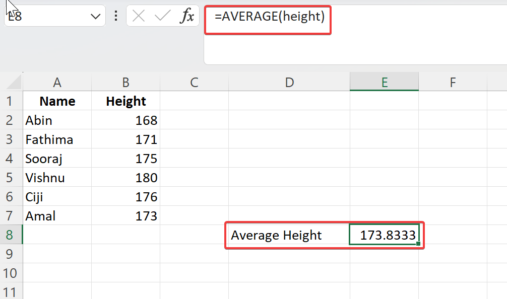
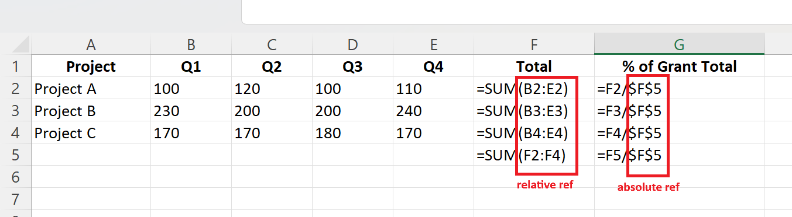

1 Getting Started
1.1 Introduction
- Excel is the most used spreadsheet software and a part of Microsoft Office suite.
- Excel skill is very much required for a public health professional for their day to day activities.
- Some uses
- Crunching numbers
- Creating charts
- Organizing lists
- Manipulating text
- Access data from other sources
1.2 Workbook and Worksheets
- A workbook is a file that you create in Excel (default file extension is
.xlsx) - Each workbook contains one or more worksheets
- Each worksheet contains individual cells
- There is an invisible layer on top of each worksheet which holds the charts, diagrams, pictures, etc
1.3 Data Types
- There are four basic types of data in Excel
- A numeric value
- Text
- A formula
- An error
- Numeric value can be numbers, dates, time, amount,…
- Formulas are what makes spreadsheet a spreadsheet, more on this later.
1.4 Number Formatting
- Formatting numbers make data more understandable
- Commonly used number formats:
- General
- Number
- Currency
- Date
- Time
- Percentage
- Number formatting can be changed by clicking Number format dropdown.

- Number of decimals can be increased or decreased from the command next to Number format dropdown.
1.5 Worksheet Operations
- Sheet tab in the bottom left corner lists all the worksheets(except hidden)

- If there are many worksheets in the workbook, all the sheets may not be visible. Use the tab scrolling control to see the sheet tabs.

- Right click on the sheet tab to see the available operations.

1.6 Rows and Columns
- There are exactly 1,048,576 rows and 16,384 columns in every worksheet.
- Row numbers are at the left side of the sheet.
- Column numbers are at the top of the sheet.
- To insert new row or rows, select an entire row or multiple rows by clicking the row numbers in the worksheet border. Right-click and choose Insert.
- To insert new column or columns, select an entire column or columns by clicking the column letters in the worksheet border. Right-click and choose Insert.
- Excel will insert exactly the number of rows or columns you selected.
- To delete rows or columns, select the rows or columns to remove from the worksheet border, right-click and choose Delete.
1.7 Cells and Ranges
- A cell is a single element in a worksheet that can hold a value, some text, or a formula.
- A cell is identified by its address, which consists of its column letter and row number.
- For example, cell
D9is the cell in the 4th column and the 9th row.
- A group of one or more cells is called a range.
- You designate a range address by specifying its upper-left cell address and its lower-right cell address, separated by a colon.
- For example,
A1:A100is the range which contains 1st to 100th row in the 1st column.
1.8 Copying and Moving Cells or Ranges
- Copying or moving consists of two steps:
- Select the cell or range to copy (the source range), and copy it to the Clipboard. To move the range instead of copying it, cut the range instead of copying it.
- Select the cell or range that will hold the copy (the destination range), and paste the Clipboard contents.
When you paste the information, Excel overwrites any cells that is in the destination range without any warning.
1.8.1 Pasting in special ways
- To control what is pasted into the destination range, right-click and choose
Paste Special. There are multiple options available

Some useful paste options are as follows:
| Select | To Paste |
|---|---|
| Paste | All cell contents and formatting, including linked data |
| Formulas | Only the formulas |
| Formulas & Number Formatting | Pastes formulas and number formatting only |
| Keep Source Formatting | All cell contents and formatting |
| Transpose | Reorients the content of copied cells when pasting. Data in rows is pasted into columns and vice versa |
| Values | Pastes the results of formulas |
| Values & Number Formatting | Pastes the results of formulas plus the number formatting |
| Values & Source Formatting | Pastes the results of formulas plus all formatting |
| Formatting | Pastes only the formatting of the source range |
| Paste Link | Creates formulas in the destination range that refer to the cells in the copied range |
1.9 Named Ranges
Named ranges in Excel are like shortcuts for your data. They allow you to assign a meaningful name to a specific cell or range of cells, making it easier to reference them throughout your workbook. This feature not only streamlines your formulas but also enhances the readability and organization of your spreadsheets. Let’s see how named ranges work and explore their practical applications through an example.
1.9.1 Creating Named Ranges
To create a named range in Excel, follow these simple steps:
- Select the Cells: Highlight the cell or range of cells you want to name.
- Name the Range: Go to the “Formulas” tab on the ribbon, click on “Define Name,” and enter your desired name for the range.
- Confirm: Click “OK” to save the named range.

The fastest way to create a name is to use the Name box (to the left of the Formula bar). Select the cell or range to name, click the Name box, and type the name. Press Enter to create the name.
1.9.2 Advantages of Named Ranges
- Readability: Instead of referring to cells by their coordinates (e.g., A1:B10), you can use descriptive names that convey the purpose of the data.
- Ease of Use: A meaningful range name (such as Hb_level) is much easier to remember than a range address
- Flexibility: They make your spreadsheet more dynamic as named ranges automatically adjust when you insert or delete rows and columns.
1.9.3 Example
Suppose you have the following data:

Instead of referencing cell ranges directly in your formulas, you can name the ranges for better clarity. Let’s name cell range A2:A7 as “names” and B2:B7 as “height”
- Define Named Ranges:
- names:
=$A$2:$A$7 - height:
=$B$2:$B$7
- names:
Now, to calculate the average heights, you can simply use the formula:
=AVERAGE(height)
1.10 Tables
Tables in Excel are powerful tools for organizing and analyzing data efficiently. With their flexibility and functionality, tables can significantly enhance your data management capabilities. In this section, we’ll see how to add a table, sorting and filtering data within a table, and changing the appearance of tables in Excel.
1.10.1 Adding a Table:
Adding a table in Excel is a straightforward process:
Select Your Data: Highlight the range of cells containing your data. This can include headers if your data has them.
Insert a Table: Navigate to the “Insert” tab on the Excel ribbon. Click on the “Table” button. Excel will automatically detect the range of cells you selected and prompt you to confirm it. Ensure the “My table has headers” option is checked if your data includes headers.
Customize Your Table: After inserting the table, you can modify its design and structure using the “Table Design” tab that appears when the table is selected. Here you can change the table style, add or remove columns, and make other adjustments to suit your preferences.
You can use the keyboard shortcut Ctrl + T to insert a table from the selected range of cells.
1.10.2 Sorting and Filtering Data:
Once you’ve created a table, sorting and filtering data becomes incredibly efficient:
Sorting Data: To sort data within a table, simply click on the dropdown arrow in the header of the column you want to sort by. Choose either “Sort A to Z” or “Sort Z to A” based on your preference. Excel will instantly rearrange the rows according to your selection.
Example: Suppose you have a table of data about basic details of people with columns for “Name”, “Age”, and “Sex”. You can sort the table by “Age” in descending order to see the oldest people at the top.
Filtering Data: Filtering allows you to display only specific rows of data based on criteria you define. Click on the dropdown arrow in the header of the column you want to filter. You can then select specific values to display or use custom filter options for more complex filtering conditions.
Example: In a table containing patients information, you can filter the “Department” column to show only patient from the “Cardiology” department.
1.10.3 Naming a Table
Assigning names to tables in Excel is a straightforward process, yet its implications are profound.
Select the Table: Begin by selecting the range of cells that constitute your table.
Navigate to the ‘Table Design’ Tab: Once your table is selected, navigate to the ‘Table Design’ tab on the Excel ribbon. Here, you’ll find a
Table Nameoption.Enter a Name: Below the
Table Nameoption, there is a textbox where you can enter the name for the table. Give the table a name and press “Enter”.
1.10.4 Changing Appearance:
The “Table Design” tab offers a range of predefined table styles that you can apply with a single click. These styles include different colors, fonts, and formatting options. If you are not happy with any of the built-in Excel table styles, you can create your own table style from New Table Style option underneath the predefined styles.
Experiment with the features to discover the full potential of tables in Excel for your specific needs.
1.11 Formatting Worksheets
Formatting a worksheet in Excel is essential for enhancing readability, organizing data, and making it visually appealing. Whether you’re working on a budget, report, or any other document, mastering formatting options can significantly improve the presentation of your data. In this section, we’ll explore various formatting tools including font, text alignment, color and shading, borders and lines.
1.11.1 Font
Font formatting allows you to change the appearance of text within cells. Excel offers a variety of font styles, sizes, and effects to customize text according to your preference.
- Select the range of cells you want to format.
- Go to the ‘Home’ tab in the Excel ribbon.
- In the ‘Font’ group, you can choose different font styles, sizes, bold, italic, underline, or other effects.
1.11.2 Text Alignment:
Text alignment determines how the content within a cell is positioned. Excel provides options for aligning text horizontally and vertically within cells.
- Select the cells you want to align.
- Navigate to the ‘Alignment’ group under the ‘Home’ tab.
- Click on the alignment icons to align text left, center, or right horizontally, and top, middle, or bottom vertically.
1.11.3 Colour and Shading:
Colour and shading help to differentiate data, highlight important information, and improve visual clarity. Excel allows you to change the background colour of cells, apply shading effects, and colorize text.
- Select the cell or range of cells you want to format.
- Locate the ‘Font’ and ‘Fill’ options in the ‘Home’ tab.
- Choose a font color to change the text color.
- Use the ‘Fill Color’ tool to change the background color of cells.
1.11.4 Borders and Lines:
Borders and lines enable you to create clear boundaries around cells or ranges, making your data more organized and structured.
- Select the cells you want to apply borders to.
- Navigate to the ‘Font’ group under the ‘Home’ tab.
- Click on the ‘Borders’ dropdown menu to choose from various border styles such as outline borders, inside borders, or diagonal borders.
- Select the desired border style to apply it to the selected cells.
Experiment with these formatting features to create professional-looking documents tailored to your specific needs.
1.12 Conditional Formatting
Conditional formatting in Excel is a powerful tool that allows you to visually highlight and format cells based on specific conditions. Whether you’re a data analyst, program manager, or a student, understanding how to utilize conditional formatting can significantly enhance the readability and analysis of your Excel spreadsheets. In this section, we’ll see the various aspects of conditional formatting including graphical conditional formats and creating formula-based rules.
1.12.1 Specifying Conditional Formatting:
To specify conditional formatting in Excel, follow these simple steps:
- Select the Range: Begin by selecting the range of cells you want to apply conditional formatting to.
- Access the Conditional Formatting Menu: Navigate to the “Home” tab on the Excel ribbon, then click on the “Conditional Formatting” dropdown menu located in the “Styles” group.
- Choose a Formatting Rule: From the dropdown menu, select the type of conditional formatting rule you want to apply. Excel offers a variety of predefined rules such as highlighting cells that contain specific text, dates, or values, as well as rules based on comparison operators.
- Specify Conditions: Define the conditions under which the formatting should be applied. This could involve setting threshold values, text criteria, date ranges, or custom formulas.
- Set Formatting Options: After selecting the rule type, configure the formatting options according to your preferences. This may include choosing font color, cell fill color, font style, borders, and more.
- Apply and Review: Once you’ve set up the formatting rule, click “OK” to apply it to the selected range. Review the changes to ensure they meet your expectations.
1.12.2 Using Graphical Conditional Formats:
Excel provides several graphical conditional formats that offer visually appealing ways to represent your data. Some popular graphical formats include:
- Data Bars: Data bars add horizontal bars to cells proportional to their values. This makes it easy to visually compare values across a range of cells.
- Color Scales: Color scales apply a gradient of colors to cells based on their values. For example, you can use a green-yellow-red color scale to highlight high, medium, and low values in your dataset.
- Icon Sets: Icon sets display icons (such as arrows, shapes, or symbols) in cells based on predefined criteria. For instance, you can use arrow icons to indicate whether values are increasing, decreasing, or staying the same.
1.12.3 Formula-Based Rules:
Formula-based conditional formatting allows you to create custom rules using Excel formulas. This provides flexibility in defining conditions for formatting. Here’s an example of how to create a formula-based rule:
Example: Highlighting Cells with Values Greater Than Average
- Select the Range: Choose the range of cells you want to format.
- Access Conditional Formatting: Go to the “Conditional Formatting” menu and select “New Rule.”
- Choose a Rule Type: Select “Use a formula to determine which cells to format.”
- Enter the Formula: In the formula box, enter a formula that defines the condition. For this example, the formula could be
=A1>AVERAGE(A:A)assuming the data is in column A. - Set Formatting: Specify the formatting options you want to apply to cells that meet the condition.
- Apply and Review: Click “OK” to apply the rule and review the changes in your spreadsheet.
1.13 Relative and Absolute Cell Referencing
There are two types of cell references: relative and absolute. Relative and absolute references behave differently when copied and filled to other cells. Relative references change when a formula is copied to another cell. Absolute references, on the other hand, remain constant no matter where they are copied.
Relative: The row and column references can change when you copy the formula to another cell because the references are actually offsets from the current row and column. By default, Excel creates relative cell references in formulas.
Absolute: The row and column references don’t change when you copy the formula because the reference is to an actual cell address. An absolute reference uses two dollar signs in its address: one for the column letter and one for the row number (for example, $A$5).
Mixed: Either the row or the column reference is relative, and the other is absolute. Only one of the address parts is absolute (for example, $A4 or A$4).
The type of cell reference is important only if you plan to copy the formula to other cells.
1.13.1 Example

Relative Cell Referencing: In the given example, if we’re calculating the Total for each project, the formula for Project A’s Total might be =SUM(B2:E2). When this formula is copied to the row below for Project B, Excel automatically adjusts the formula to =SUM(B3:E3). This adjustment is because Excel sees that the formula has been moved down by one row, so it updates the row references accordingly. This behavior is known as relative cell referencing.
Absolute Cell Referencing: Now, let’s say we want to calculate the percentage of each project’s total compared to the grand total. To do this, we might use a formula like =F2/$F$5 for Project A’s percentage. The $ signs before the row and column in $F$5 make the reference absolute. When you copy this formula to other rows, the reference to cell F5 will remain unchanged. This is useful when you want a specific cell reference to stay constant, such as when referencing a grand total or a fixed value.
In summary, relative cell referencing adjusts the reference based on the position of the formula when copied, while absolute cell referencing keeps the reference constant regardless of where the formula is copied.
1.14 Creating, Opening, and Saving Workbooks
In Excel, workbooks are the foundation of organizing and manipulating data. Whether you’re starting from scratch, accessing an existing file, or preserving your work, understanding how to create, open, and save workbooks is fundamental.
1.14.1 Creating a New Workbook:
Launch Excel: Start by opening Microsoft Excel on your computer. You can usually find it in your applications folder or by searching your computer’s programs.
Select ‘Blank Workbook’: Upon launching Excel, you’re typically greeted with a new blank workbook automatically. If not, you can create a new one by clicking on “Blank Workbook” from the available templates or options.
Begin Your Work: Once the new workbook is created, you’re ready to start entering data, formulas, or any other content you need. Each workbook consists of individual worksheets (tabs at the bottom), where you can organize your data efficiently.
You can use the keyboard shortcut Ctrl + N to create a new workbook
1.14.2 Opening an Existing Workbook:
Navigate to File: To open an existing workbook, click on the “File” tab located in the top-left corner of the Excel window. This will bring up the File menu.
Select ‘Open’: From the File menu, select the “Open” option. Alternatively, you may see a list of recent workbooks that you can directly access without going through the ‘Open’ dialog.
Locate the Workbook: A dialog box will appear, allowing you to browse through your computer’s files. Navigate to the location where your desired workbook is stored.
Choose the Workbook: Once you’ve found the workbook you wish to open, select it by clicking on its file name, then click ‘Open.’ Excel will load the workbook, displaying its contents in the Excel window.
You can use the keyboard shortcut Ctrl + O to open an existing workbook
1.14.3 Saving a Workbook:
Click on File: When you’re ready to save your workbook, navigate to the “File” tab again.
Select ‘Save’: If you’re saving the workbook for the first time, choose ‘Save As.’ If you’ve already saved it before and want to update the existing version, choose ‘Save.’
Choose Location and Name: In the Save As dialog box, choose where you want to save the workbook on your computer. Additionally, give your workbook a descriptive name so you can easily identify it later.
Click ‘Save’: Once you’ve selected the location, name, and file format, click ‘Save’ to save your workbook. If you chose ‘Save’ earlier, it will overwrite the existing file with the updates you’ve made.
You can use the keyboard shortcut Ctrl + S to save a workbook
1.15 Printing Your Excel File
You may sometimes need to print the excel file for sharing, presenting, or archiving your data. Excel has a variety of printing options to ensure your document look professional and meet your specific needs. Here, we touch upon the basic printing options. There are many other options or formatting setups which you can read on your own.
Review Your Spreadsheet: Before printing, ensure your spreadsheet is formatted correctly. Check for any errors, inconsistencies, or formatting issues that may affect the printout.
Set Print Area (Optional): If you only want to print a specific area of your spreadsheet, select the cells you want to print, then navigate to the Page Layout tab on the Excel ribbon. Click on “Print Area” and select “Set Print Area” to define the range.
Adjust Page Layout: Navigate to the Page Layout tab and click on “Page Setup.” Here you can adjust settings such as orientation (portrait or landscape), paper size, margins, and scaling to fit your spreadsheet appropriately on the page.
Preview Print: Use the Print Preview function (located in the File tab under Print) to review how your spreadsheet will appear on paper. This allows you to make any final adjustments before printing.
Print Your Spreadsheet: Once satisfied with the preview, select the printer you wish to use and click “Print.” Excel will then send your spreadsheet to the printer, producing a hard copy according to your specified settings.
1.16 Converting to PDF Format
Excel provides a straightforward method to convert your spreadsheet into a PDF file. Simply go to the File tab, select “Save As,” and choose “PDF” from the list of available file formats. Name your file and select the destination folder, then click “Save” to generate the PDF.
Converting to PDF ensures that your spreadsheet maintains its formatting, layout, and data integrity across different devices and platforms. This is particularly useful for sharing documents with others who may not have Excel installed or to preserve the original formatting for archival purposes.
1.17 Useful Keyboard Shortcuts
| Shortcut | Description |
|---|---|
| Ctrl + C | Copy |
| Ctrl + X | Cut |
| Ctrl + V | Paste |
| Ctrl + Z | Undo |
| Ctrl + Y | Redo |
| Ctrl + S | Save |
| Ctrl + N | New workbook |
| Ctrl + O | Open workbook |
| Ctrl + P | |
| Ctrl + F | Find |
| Ctrl + H | Replace |
| Ctrl + A | Select all |
| Ctrl + B | Bold |
| Ctrl + I | Italic |
| Ctrl + U | Underline |
| Ctrl + Spacebar | Select entire column |
| Shift + Spacebar | Select entire row |
| F7 | Spell check |
| Alt + = | AutoSum |
| Alt + Enter | Start a new line in the same cell |
| Alt + F4 | Close Excel |
| Ctrl + Tab | Switch between open workbooks |
| Ctrl + Page Up | Move to the previous worksheet |
| Ctrl + Page Down | Move to the next worksheet |